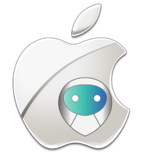
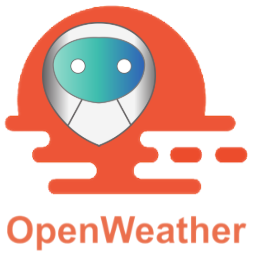
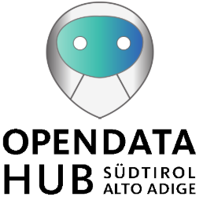

John Object Daemon Distributions
The JOD Distribution TEMPLATE is the main tool to create a new JOD Distribution.
That's necessary only if you can't find a distribution that fits your needs on the bellow lists.
More distribution will be available soon, come back and check again.
To publish your own distribution on this list, please contact us at tech@johnosproject.com.
Real physical objects
JOD PC Linux
Represents a Linux computer as a JOSP Object.

JOD PC MacOS
Represents a MacOS computer as a JOSP Object.
JOD PC Windows
Represents a Windows computer as a JOSP Object.
Protocols / Gateways / Etc
JOD Philips Hue
Represents a local Philips Hue Hub and all connected lights and switches as a single JOSP Object.
JOD MBus
Represents a single or multiple MBus Slave devices as a JOSP Object, slaves must be connected with a MBus Master reachable via serial communication.
Web and Cloud

JOD Meteo Web
Represents a meteo station that query his values to OpenWhetherMap's APIs as a JOSP Object.

JOD Alto Adige OpenDataHub
Represents AltoAdige OpenData Hub Dataset as JOSP Objects.